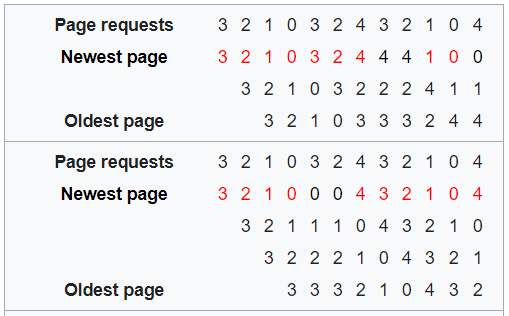

Paging is a type of memory management scheme in which the logical address space of the processes is noncontiguous. The basic method for implementing paging involves breaking the physical memory into fixed-sized blocks called frames and breaking logical memory into blocks of the same size called pages. When a process is to be executed, its pages are loaded into any available memory frames from their source which could be a file system or the backing store.
The operating system decides the number of frames allocated to a process and which page needs to be replaced when a new page comes in if all the frames for that process are already allocated. The OS does this using various page replacement algorithms. The performance of these algorithms is decided based on the number of page hits and page faults. If we find the required page in the Main Memory while CPU wants to access the page then it is a page hit. Otherwise it is a page fault. Different page replacement algorithms suggest different ways to decide which page to replace. The target for all algorithms is to reduce number of page faults.
We discuss and simulate 5 Algorithms here: First-In First-Out, Least Recently Used, Optimal Page Replacement, Second Chance Algorithm and Most Recently Used. We also check by simulation for the possibility of Belady's Anomaly.
First-In First-Out (FIFO):
This is the simplest page replacement algorithm and is based on the FIFO queue. In this algorithm, the operating system keeps track of all pages in the memory in a queue, the oldest page is in the front of the queue. When a page needs to be replaced page in the front of the queue is selected for removal.
Depending on the reference string the page removed might be rarely used page like an initialization module or even an important module that occurs frequently in process execution showing its variable nature.
While FIFO is cheap and intuitive, it performs poorly in practical application. Thus, it is rarely used in its unmodified form.
Least Recently Used (LRU) and Most Recently Used (MRU):
Both LRU and MRU are greedy algorithms. LRU chooses the page that has not been used for the longest period of time. While MRU does the very opposite by choosing the most recently used page.
While LRU is generally a good choice as an algorithm it requires keeping track of what was used when, which is expensive and may require substantial hardware assistance. MRU on the other hand is simpler to implement.
Optimal Page Replacement:
This algorithm is the theoretically optimal page replacement algorithm as it guarantees the lowest possible page fault rate for a fixed number of frames. It is also known as OPT, clairvoyant replacement algorithm, or Belady's optimal page replacement policy. It swaps out the page whose next use will occur farthest in the future, i.e., the page that will not be used for the longest period of time.
The drawback is that it requires future knowledge of the reference string. Hence it cannot be implemented in a general-purpose operating system because it is impossible to compute reliably how long it will be before a page is going to be used.
Second Chance Algorithm:
It is a modified form of FIFO and performs relatively better than FIFO at little cost for the improvement. It works by looking at the front of the queue as FIFO does, but instead of immediately paging out that page, it checks to see if its referenced bit is set. If it is not set, the page is swapped out. Otherwise, the referenced bit is cleared, the page is inserted at the back of the queue (as if it were a new page) and this process is repeated. This can also be thought of as a circular queue.
As it's name suggests, Second-chance gives every page a "second-chance" – an old page that has been referenced is probably in use, and should not be swapped out over a new page that has not been referenced.
Belady's anomaly:
Belady's anomaly is the phenomenon in which increasing the number of page frames results in an increase in the number of page faults for certain memory access patterns.
This phenomenon is commonly experienced when using the FIFO page replacement algorithm. In FIFO, the page fault may or may not increase as the page frames increase, but in Optimal and stack-based algorithms like LRU, as the page frames increase the page fault decreases.
An example of Belady's anomaly. Using three page frames, nine page faults occur. Increasing to four page frames causes ten page faults to occur.